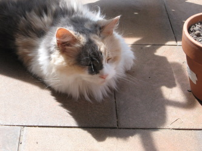
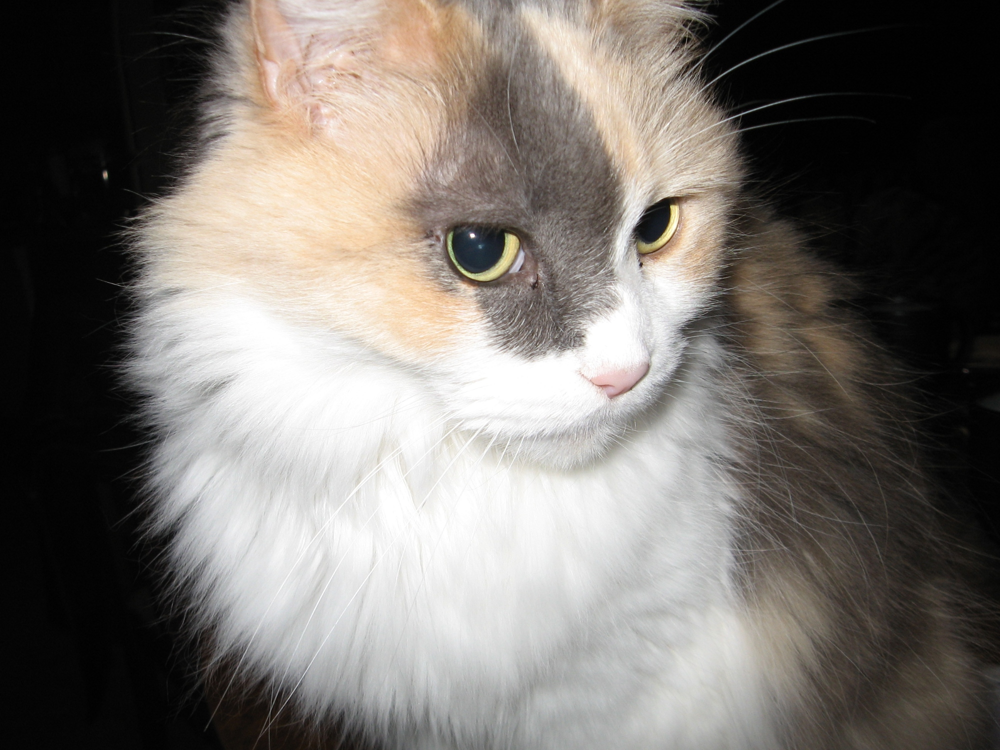
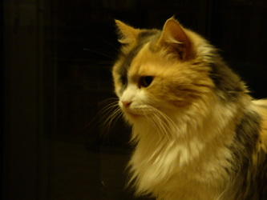
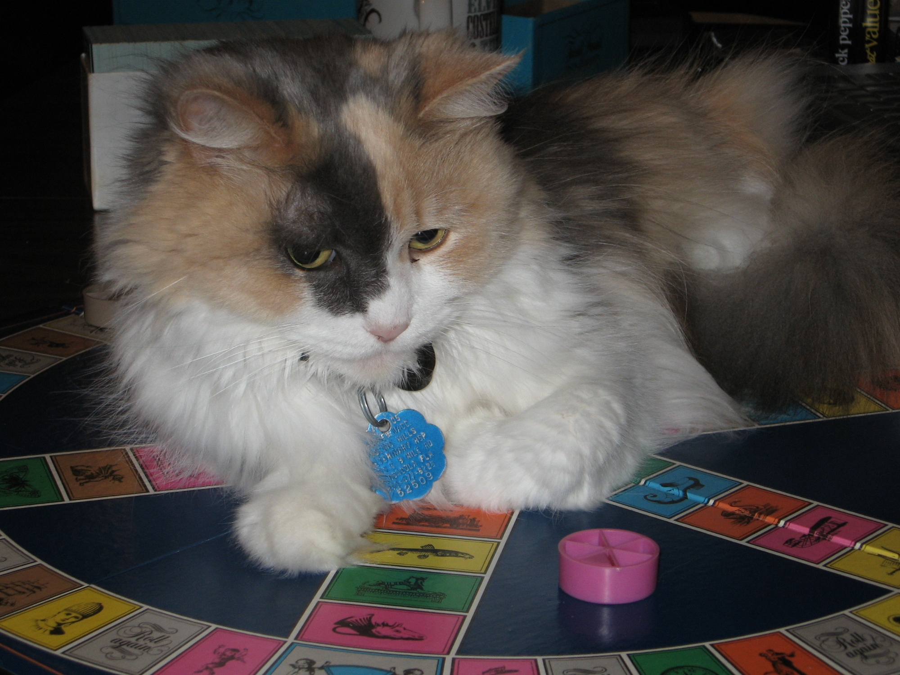

Cat-A-Log Item: Chloe
Chloe was a beautiful longhair calico my wife found at Pensacola Junior College. She therefore was always referred to as the "educated cat".
Chloe mixed well with the cats we had and the ones that came after her. She had a great disposition as evidenced by all the photos we have of her sleeping with other cats.
She remained healthy and even tempered right up to the end.
   